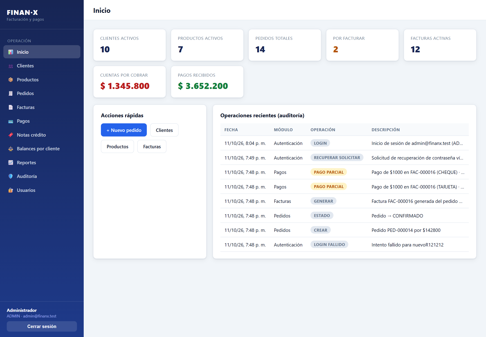
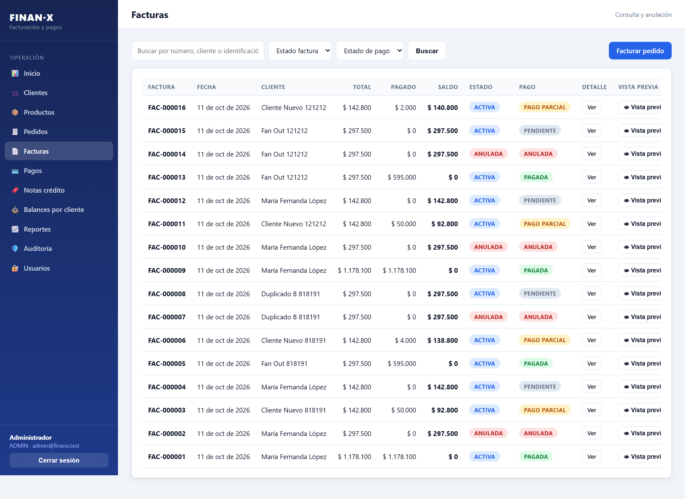
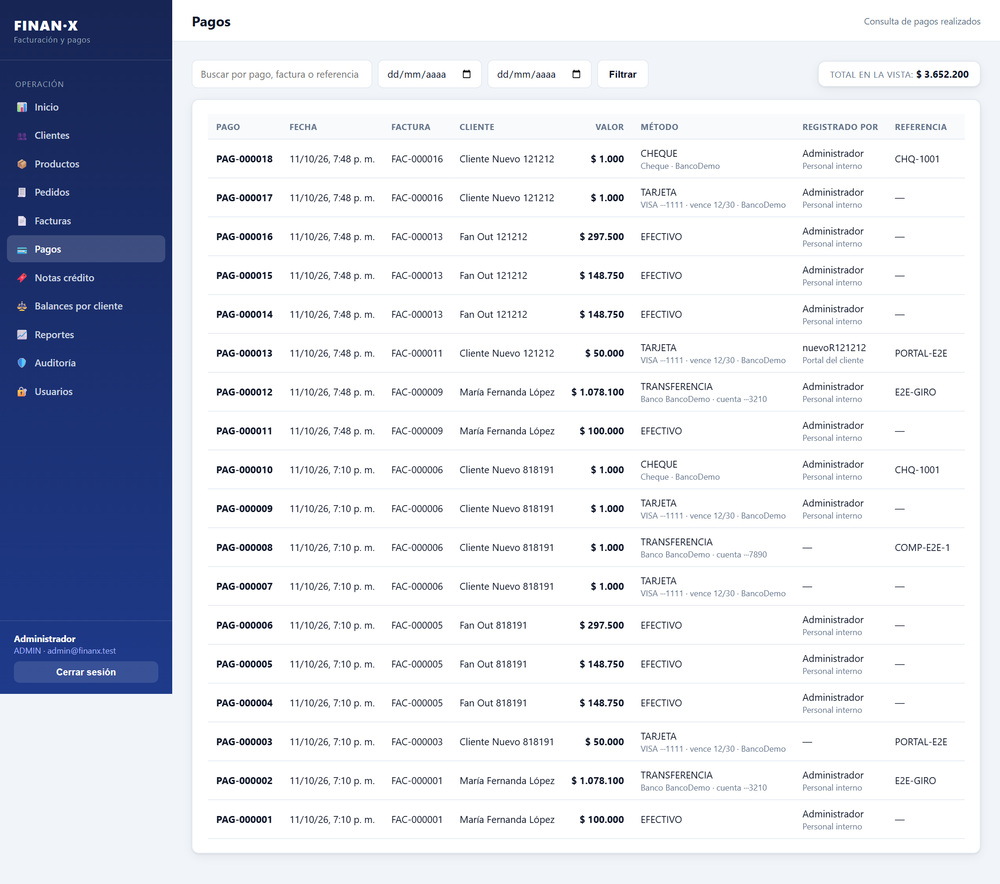
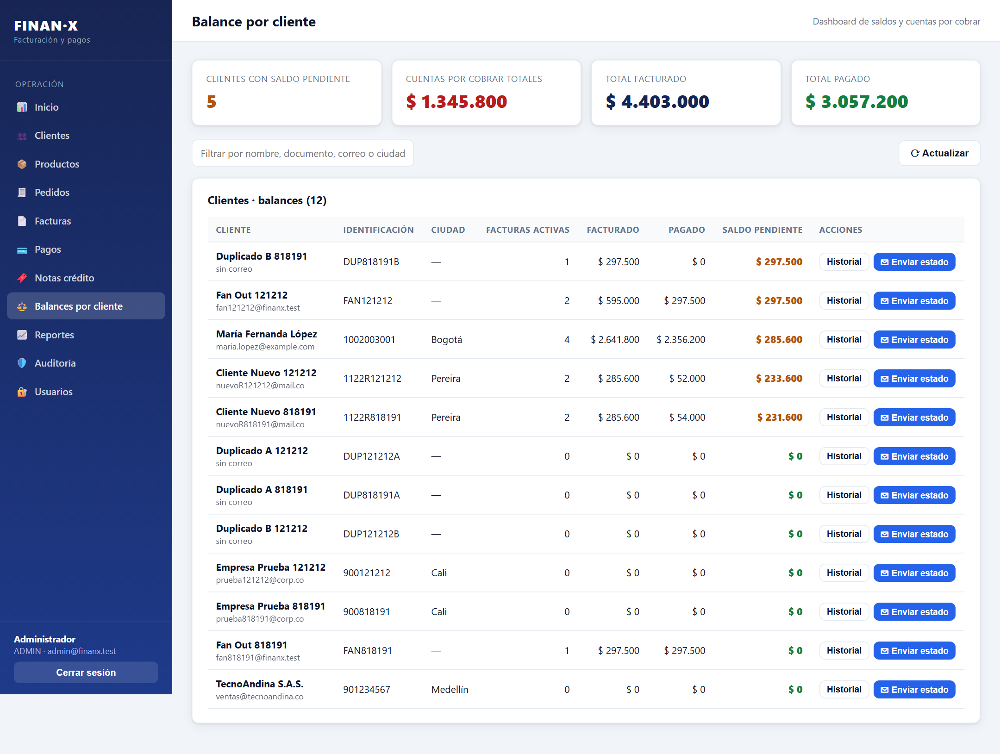
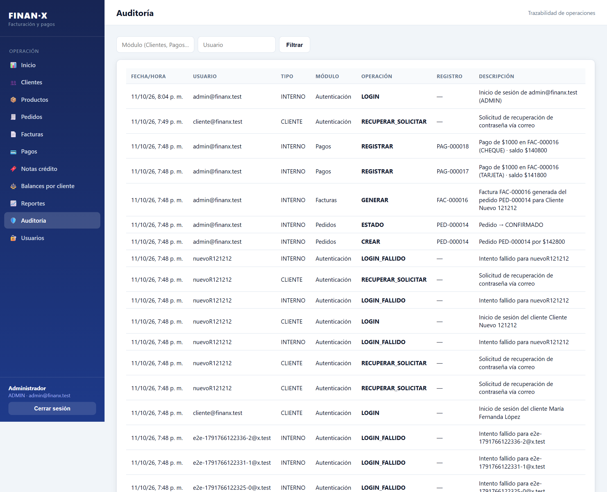
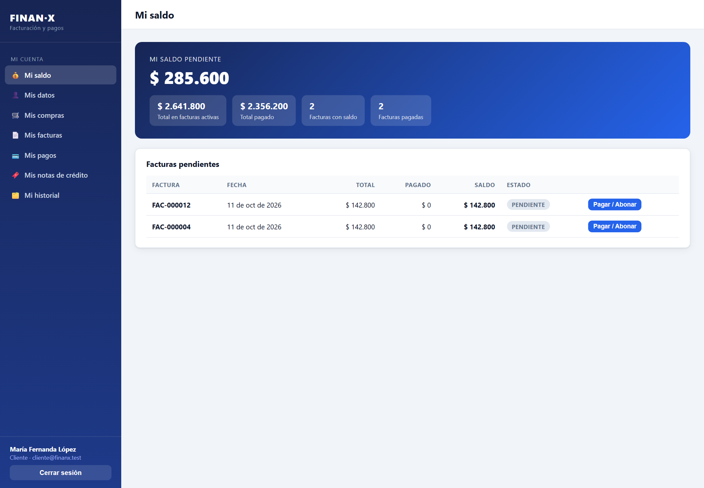

FINAN·X
Sistema de facturación y pagos
Resultados de la suite de integración de FINAN-X ejecutada sobre el sistema completo y en funcionamiento. Verifica que las piezas —interfaz, API y base de datos— funcionan juntas y cumplen las reglas de negocio. 157 comprobaciones, 0 fallos.
| Sistema | FINAN-X · Facturación y pagos |
| Tipo de prueba | Integración de extremo a extremo (end-to-end) |
| Comprobaciones ejecutadas | 157 |
| Aprobadas | 157 |
| Fallidas | 0 |
| Casos de control documentados | 51 |
AutoresLuis Alfredo Jaramillo Restrepo · Mayra Juliana Vélez Hernández
Proyecto académico · Integración de Aplicaciones · Sexto semestre · FINAN-X 1.0.0 · 12 de noviembre de 2026
Demostrar que los componentes de FINAN-X funcionan correctamente en conjunto. Responde a la pregunta de la evidencia: ¿cómo comprobamos que los componentes funcionan bien juntos?
Una prueba unitaria verifica una función aislada; aquí lo que se verifica es el recorrido completo de una operación:
Usuario (navegador)
│ petición HTTP
▼
Frontend (React) → API REST (Express) → Reglas de negocio
│
▼
PostgreSQL 16
│
◄──────────── respuesta JSON ──────────────┘Cada comprobación recorre esa cadena completa y verifica el resultado de negocio, no solo que la llamada responda.
| Se incluye | Se excluye de esta evidencia |
|---|---|
| Ejecución real de la API contra la base de datos, con datos de demostración. | Pruebas unitarias de funciones aisladas (la cobertura principal del proyecto es de integración). |
| Autenticación, autorización por rol y aislamiento entre clientes. | Pruebas de carga o de estrés con volúmenes altos de datos. |
| Todos los módulos: clientes, productos, pedidos, facturación, pagos, notas de crédito, reportes, auditoría y portal. | Pruebas de compatibilidad en todos los navegadores del mercado. |
| Reglas de negocio: sin sobrepago, sin doble facturación, sin devolver de más, baja lógica. | Pruebas de usabilidad con usuarios reales. |
| Seguridad: roles, cifrado, no exposición de datos de tarjeta, límite de intentos. | Pruebas de penetración formales. |
| Persistencia y cálculo de saldos. | Pruebas sobre hardware específico (no aplica). |
| Elemento | Detalle |
|---|---|
| Sistema bajo prueba | FINAN-X versión 1.0, ejecutándose con sus tres servicios. |
| Base de datos | PostgreSQL 16 en contenedor, creada desde el esquema del proyecto y cargada con datos de demostración. |
| Servidor de aplicaciones | Node.js 24 con Express. |
| Cliente de pruebas | Peticiones HTTP directas a la API (independientes del navegador, para que el resultado no dependa de la interfaz). |
| Datos de entrada | Datos de demostración creados por el sistema, con identificadores únicos por ejecución para que las pruebas puedan repetirse. |
| Automatización | Suite backend/scripts/e2e.mjs, ejecutable con npm test. |
La suite genera identificadores a partir de la marca de tiempo, de modo que puede ejecutarse varias veces sin que los datos de una corrida interfieran con la siguiente. El bloqueo por intentos fallidos de acceso vive en memoria del proceso, por lo que conviene reiniciar el servicio entre ejecuciones consecutivas; está documentado en el propio código.
npm run seed)./api/health).cd backend && npm test. La suite crea sus propios datos, ejecuta las comprobaciones y devuelve un código de salida distinto de cero si alguna falla.# Secuencia completa
docker compose up -d db # base de datos
cd backend
npm run seed # datos de demostración
npm run dev # arranca la API (en otra terminal)
npm test # ejecuta las 157 comprobaciones=== Resultado: 157 aprobadas, 0 fallidas ===La suite está organizada en bloques temáticos. Este es el recuento de cada uno, leído directamente de la salida de la ejecución:
| Bloque de pruebas | Aprobadas | Fallidas | Resultado |
|---|
Se documentan 51 casos de control que cubren los requisitos más importantes de la Evidencia 3. Cada caso declara sus datos de entrada, el resultado esperado y el resultado obtenido, que se corresponde con una comprobación realmente ejecutada (el nombre entre comillas es el que aparece en el registro).
La columna «Resultado» refleja lo ocurrido en la ejecución registrada en el anexo.
| ID | Módulo | Objetivo | Datos de entrada | Resultado esperado | Res. | Requisitos |
|---|---|---|---|---|---|---|
| CP-01 | Autenticación | Iniciar sesión con credenciales válidas de administrador. | Credenciales válidas de una cuenta ADMIN (clave temporal ya cambiada). | 200 y sesión con rol ADMIN. | PASA | RF-32, RNF-03 |
| CP-02 | Autenticación | Autoregistro de un cliente nuevo desde el portal. | Datos completos del cliente, usuario y contraseña. | 201, queda autenticado y accede a sus datos. | PASA | RF-01, RF-34 |
| CP-03 | Clientes | Impedir el registro de un cliente con identificación duplicada. | Dos clientes con el mismo tipo y número de identificación. | 409 y no se crea el segundo. | PASA | RF-02, CA-01 |
| CP-04 | Clientes | Buscar clientes por coincidencia parcial. | Filtro de búsqueda con parte del nombre. | 200 con los clientes que coinciden. | PASA | RF-03 |
| CP-05 | Clientes | Inactivar un cliente (baja lógica). | Petición de cambio de estado a INACTIVO. | 200 y el cliente queda inactivo sin borrarse. | PASA | RF-04, RN-13 |
| CP-06 | Clientes | Crear la cuenta de portal de un cliente. | Usuario y contraseña válidos. | 201 con la cuenta creada. | PASA | RF-05 |
| CP-07 | Productos | Registrar un producto. | Código, nombre, precio e impuesto. | 201 con el producto creado. | PASA | RF-06 |
| CP-08 | Productos | Rechazar código de producto duplicado y precio negativo. | Código ya existente; precio negativo. | 409 y 400 respectivamente. | PASA | RF-07 |
| CP-09 | Pedidos | Crear un pedido con líneas. | Cliente activo y uno o más productos con cantidad. | 201 con número de pedido. | PASA | RF-08 |
| CP-10 | Pedidos | Verificar que los totales se calculan en el servidor. | Dos productos con precio y cantidad conocidos. | Subtotal, impuestos y total coinciden con la aritmética exacta. | PASA | RF-09, RNF-15, CA-02 |
| CP-11 | Pedidos | Confirmar un pedido. | Cambio de estado a CONFIRMADO en un pedido en borrador. | 200 y estado CONFIRMADO. | PASA | RF-10 |
| CP-12 | Pedidos | Impedir modificar un pedido ya confirmado. | Edición de un pedido en estado CONFIRMADO. | 409. | PASA | RF-11, RN-07 |
| CP-13 | Facturación | Generar una factura desde un pedido confirmado. | Identificador del pedido. | 201 con número de factura. | PASA | RF-12 |
| CP-14 | Facturación | Impedir facturar dos veces el mismo pedido. | Segunda petición de facturación del mismo pedido. | 409. | PASA | RF-13, RN-05 |
| CP-15 | Facturación | Anular una factura sin pagos indicando motivo. | Motivo no vacío. | 200 y la factura queda ANULADA. | PASA | RF-14, RN-08 |
| CP-16 | Facturación | Impedir anular una factura con pagos. | Intento de anulación sobre una factura pagada. | 409. | PASA | RF-15, RN-09, CA-06 |
| CP-17 | Facturación | Refacturar un pedido cuya factura fue anulada. | Anular y volver a facturar el mismo pedido. | 201 con otro número; la anulada se conserva. | PASA | RF-16, RN-05, CA-10 |
| CP-18 | Pagos | Registrar un pago parcial. | Importe menor que el saldo. | 201 y la factura queda en PAGO_PARCIAL. | PASA | RF-17, RF-19 |
| CP-19 | Pagos | Impedir un pago superior al saldo pendiente. | Importe mayor que el saldo. | 400 y el saldo no cambia. | PASA | RF-18, RN-03, CA-03 |
| CP-20 | Pagos | Completar el pago de una factura. | Pago del saldo restante. | Estado PAGADA y saldo 0. | PASA | RF-19, CA-04, CA-05 |
| CP-21 | Pagos | Consultar el saldo de una factura. | Identificador de la factura. | 200 con el saldo, lo pagado y el estado de pago. | PASA | RF-20 |
| CP-22 | Notas de crédito | Crear una nota de crédito con motivo. | Factura activa con pagos, importe válido y motivo. | 201 con número de nota. | PASA | RF-21 |
| CP-23 | Notas de crédito | Impedir devolver más de lo pagado. | Importe superior a lo recaudado. | 400. | PASA | RF-22, RN-10, CA-07 |
| CP-24 | Notas de crédito | Verificar que la devolución aumenta el saldo. | Nota de crédito sobre una factura pagada. | El saldo sube exactamente el importe devuelto. | PASA | RF-23, RN-11, CA-08 |
| CP-25 | Notas de crédito | Anular una nota de crédito y no permitir reanularla. | Motivo de anulación; segundo intento. | 200 y luego 409. | PASA | RF-24 |
| CP-26 | Reportes | Consultar la facturación por rango de fechas. | Fechas de inicio y fin. | 200 con totales coherentes. | PASA | RF-25 |
| CP-27 | Reportes | Consultar el resumen del negocio. | Sin parámetros. | 200 con los indicadores del panel. | PASA | RF-26 |
| CP-28 | Reportes | Consultar el balance por cliente. | Sin parámetros. | 200 con el resumen y la lista de clientes. | PASA | RF-27 |
| CP-29 | Reportes | Consultar el historial financiero de un cliente. | Identificador de cliente. | 200 con sus facturas y pagos. | PASA | RF-28 |
| CP-30 | Reportes | Generar el estado financiero para correo. | Identificador de cliente. | 200 con asunto, destinatario y cuerpo. | PASA | RF-29 |
| CP-31 | Auditoría | Comprobar que las operaciones quedan auditadas. | Registrar un pago y consultar la auditoría. | La operación aparece registrada. | PASA | RF-30, RN-14, CA-20 |
| CP-32 | Auditoría | Consultar la auditoría filtrando por módulo. | Filtro por módulo. | 200 con los registros del módulo. | PASA | RF-31 |
| CP-33 | Usuarios | Gestionar usuarios internos (solo administrador). | Creación de usuario con rol. | 201 con el usuario creado. | PASA | RF-32 |
| CP-34 | Usuarios | Impedir quedarse sin administradores activos. | Un administrador intenta desactivarse a sí mismo. | 409. | PASA | RF-33 |
| CP-35 | Seguridad | Verificar el control de acceso por rol. | Un facturador intenta acceder a la gestión de usuarios. | 403. | PASA | RNF-06, CA-16 |
| CP-36 | Seguridad | Recuperar contraseña con código de un solo uso. | Solicitar código por correo y usarlo. | 200; el código caduca, se limita en intentos y no se reutiliza. | PASA | RF-35, CA-11, CA-12 |
| CP-37 | Seguridad | Comprobar que cambiar la contraseña cierra las sesiones. | Token obtenido antes del cambio, reutilizado después. | 401 en las peticiones con el token anterior. | PASA | RNF-04, CA-13 |
| CP-38 | Seguridad | Verificar el aislamiento entre clientes. | Un cliente intenta pagar o leer una factura ajena. | 404. | PASA | RF-36, RNF-11, CA-09 |
| CP-39 | Portal | Pagar una factura propia desde el portal. | Importe válido con un método en línea. | 201 y el pago queda registrado. | PASA | RF-37 |
| CP-40 | Portal | Consultar saldo, facturas, compras y notas propias. | Peticiones del cliente autenticado. | 200 y solo aparecen sus datos. | PASA | RF-38 |
| CP-41 | Pagos | Validar los datos de pago según el método. | Tarjeta sin datos, con CVV inválido, que no cumple Luhn y vencida. | 400 en cada caso. | PASA | RF-39 |
| CP-42 | Portal | Generar un código de pago en efectivo. | Factura propia y un importe. | Código con formato válido generado en el servidor. | PASA | RF-40 |
| CP-43 | Seguridad | Comprobar que no se exponen datos de tarjeta. | Pago con tarjeta válida y consulta posterior. | Solo se guardan los últimos 4 dígitos; sin PAN ni CVV. | PASA | RNF-02, CA-15 |
| CP-44 | Seguridad | Verificar el bloqueo por intentos fallidos. | Cinco o más inicios de sesión fallidos. | 429. | PASA | RNF-05, CA-14 |
| CP-45 | Seguridad | Verificar que el sistema exige una clave de firma válida. | Arranque sin clave y con el valor de ejemplo. | El arranque falla en ambos casos. | Manual | RNF-07, CA-17 |
| CP-46 | Seguridad | Comprobar las cabeceras de seguridad HTTP. | Petición a la API. | Presentes X-Content-Type-Options y X-Frame-Options; sin X-Powered-By. | PASA | RNF-09 |
| CP-47 | Seguridad | Comprobar la lista blanca de CORS. | Petición desde un origen permitido y desde uno no permitido. | El permitido recibe la cabecera; el otro no. | PASA | RNF-10 |
| CP-48 | Despliegue | Levantar el sistema completo con un solo comando. | docker compose up -d --build. | Los tres servicios quedan disponibles. | Manual | RNF-21, CA-18 |
| CP-49 | Autenticación | Obligar el cambio de contraseña en el primer ingreso. | Cuenta con debe_cambiar_clave = true y una petición a una ruta distinta de sesión, cambio o cierre. | 403 CAMBIO_CLAVE_REQUERIDO; tras cambiarla, 200. | Manual | RF-41, RNF-04 |
| CP-50 | Clientes | Eliminar un cliente sin movimientos. | Cliente sin pedidos ni facturas, con sesión ADMIN. | 200 y el cliente desaparece; con historial, 409. | PASA | RF-42, RN-13 |
| CP-51 | Panel de control | Panel con métricas y contenido por rol. | Sesión de ADMIN y de CAJERO. | Indicadores y gráficas; el CAJERO solo ve su caja del día. | Manual | RF-43, RNF-20 |
Esta sección es parte del valor de las pruebas: documenta defectos reales que aparecieron durante el desarrollo, cómo se detectaron y cómo se corrigieron. Todos se encontraron antes de esta entrega, y cada corrección quedó cubierta con una comprobación nueva para que no pueda reaparecer sin que la suite lo advierta.
| Defecto | Cómo se manifestaba | Causa | Corrección | Comprobación que lo protege |
|---|---|---|---|---|
| Saldo de las facturas incorrecto | Con una factura que acumulaba varios pagos y varias notas de crédito, el saldo y lo pagado salían multiplicados. | La vista de saldo unía pagos y notas de crédito con dos LEFT JOIN a la vez, lo que produce el producto cartesiano de ambos conjuntos (P pagos × N notas = P×N filas) y multiplica las sumas. | Se agregaron los pagos y las notas en subconsultas independientes. Se comprobó contra PostgreSQL real: antes daba 60 donde debía dar 30. | Bloque 9c-bis: «Valor pagado con 2 pagos es correcto», «Saldo vuelve al total tras devolver todo lo pagado». |
| Se podía devolver más dinero del cobrado | El sistema autorizaba una devolución superior al importe realmente pagado. | El mismo producto cartesiano, aplicado al cálculo del importe disponible para devolver, lo inflaba. | Se aplicó el mismo patrón de subconsultas independientes en la creación de notas de crédito. | Bloque 9c-bis: «CN que supera lo pagado disponible → 400». |
| Se podía sobrepagar una factura con devoluciones | La validación del pago aceptaba un importe mayor que el saldo real. | El saldo se calculaba como «total − pagos», ignorando las notas de crédito, en cuatro puntos distintos del código. | Se unificó el cálculo para que todos lean de la vista de saldo. Se añadió bloqueo de fila para evitar el mismo problema con dos pagos simultáneos. | Bloque 7: «Sobrepago → 400». |
| Anular una factura impedía refacturar el pedido | Tras anular una factura, intentar emitir otra del mismo pedido devolvía un error interno. | La base de datos exigía una única factura por pedido, así que la factura anulada seguía ocupando el pedido. | Se sustituyó esa restricción por un índice único parcial que solo afecta a las facturas activas, de modo que las anuladas se conservan como historial. | Bloque 9f: «Refacturar el pedido tras anular → 201». |
| El panel de inicio no funcionaba para dos roles | El cajero y el facturador veían una pantalla de error en lugar de sus indicadores. | El panel pedía dos servicios a la vez y uno de ellos exigía un rol que esos usuarios no tienen; el fallo de uno anulaba la carga del otro. | Se cambió a una carga tolerante a fallos, de modo que cada parte se muestra si está disponible, y se consulta la auditoría solo si el rol tiene permiso. | Evidencia visual: la captura del panel con datos reales. |
| Presentación: avisos sin estilo y tabla desalineada | Los avisos informativos se veían sin color y una tabla tenía una columna de más en el cuerpo que en la cabecera. | El estilo usaba dos variables que no existían en la hoja de estilos, y faltaban dos encabezados en la tabla. | Se corrigieron las variables y se completaron los encabezados. | Revisión visual: capturas del sistema en funcionamiento. |
Una prueba que nunca falla no protege de nada. Para comprobarlo, se anuló a propósito la comprobación que cierra las sesiones al cambiar la contraseña y se volvió a ejecutar: con la protección activa, un token anterior responde 401; con la protección anulada, responde 200. Es decir, la prueba detecta de verdad la ausencia de la protección.
La suite verifica la API; estas capturas demuestran que el sistema completo —con su interfaz— funciona sobre datos reales.






Estas pruebas verifican la API y las reglas de negocio contra una base de datos real, no la interfaz gráfica (que se comprueba con las capturas de la sección 8). Tampoco cubren el comportamiento bajo carga alta ni la integración con una pasarela de pagos real, que no forma parte de esta versión. Algunos escenarios de concurrencia se garantizan por diseño —bloqueo de fila en los pagos— y no por una prueba que lance peticiones simultáneas.
Salida íntegra de la suite, tal como se obtuvo. Es la evidencia directa de la sección 5: de aquí se extraen el recuento por bloque, los resultados de la sección 6 y el resultado global.
=== FINAN-X · Pruebas end-to-end === 1) Autenticación ✔ Login inválido → 401 ✔ Sin token → 401 ✔ Login admin → 200 ✔ Login cliente → 200 1b) Autoregistro de clientes ✔ Registrar cliente → 201 con token ✔ Identificación duplicada → 409 ✔ Usuario duplicado → 409 ✔ Contraseña corta → 400 ✔ Faltan datos obligatorios → 400 ✔ Cliente registrado entra al portal aislado 2) Autorización por rol ✔ Facturador en /usuarios → 403 ✔ Cliente en /clientes → 403 3) Gestión de clientes (RF-C01..C06) ✔ Crear cliente → 201 ✔ Cliente duplicado → 409 ✔ Búsqueda de cliente ✔ Inactivar cliente 4) Gestión de productos (CU-15..CU-19) ✔ Crear producto → 201 ✔ Código duplicado → 409 ✔ Precio negativo → 400 5) Pedidos (CU-20..CU-24) — cálculo en servidor ✔ Crear pedido → 201 con total calculado ✔ Totales calculados por el servidor ✔ Confirmar pedido ✔ Modificar pedido CONFIRMADO → 409 6) Facturación (CU-25..CU-30) ✔ Generar factura → 201 ✔ Refacturar mismo pedido → 409 ✔ Saldo inicial = total (PENDIENTE) 7) Pagos (RF-04..RF-06) ✔ Pago parcial → PAGO_PARCIAL ✔ Sobrepago → 400 ✔ Pago completo → PAGADA ✔ Saldo final = 0 8) Anulación (RF-03) ✔ Anular factura sin pagos → OK ✔ Anular factura con pagos → 409 ✔ Anular sin motivo → 400 9) Portal del cliente (CU-09..CU-14) — aislamiento ✔ Mis facturas (solo las propias) ✔ Ninguna factura de otro cliente ✔ Mi saldo disponible ✔ Mis datos = cliente autenticado 9b) Pago desde el portal del cliente ✔ Factura creada para cliente nuevo ✔ No paga factura ajena → 404 (aislamiento) ✔ Factura inexistente → 404 ✔ Abono desde portal → 201 PAGO_PARCIAL ✔ Sobrepago desde portal → 400 ✔ Pago visible en «mis pagos» ✔ Saldo del cliente refleja el abono ✔ Pago desde portal sin token → 401 9c) Notas de crédito ✔ CN sobre factura anulada → 409 ✔ CN sin pagos disponibles → 409 ✔ CN sin motivo → 400 ✔ CN valor 0 → 400 ✔ CN supera lo pagado → 400 ✔ Crear CN → 201 con número NC- ✔ Detalle de CN ✔ Saldo sube tras la CN (reversa el pago devuelto) ✔ Lista de CN activas incluye la creada ✔ Portal: mis notas crédito (aislado al cliente) ✔ Anular CN → OK ✔ Reanular CN → 409 ✔ Anular CN sin motivo → 400 9c-bis) Regresión: saldo con múltiples pagos y notas de crédito ✔ Factura de prueba con total > 0 ✔ Valor pagado con 2 pagos es correcto (no multiplicado) ✔ Saldo 0 tras pagar el total con 2 pagos ✔ Nota de crédito 1 creada sobre factura con 2 pagos ✔ Tras la 1ª nota el saldo sube exactamente el valor devuelto ✔ Notas de crédito devueltas = valor de la nota (no duplicado) ✔ Nota de crédito 2 creada sobre factura con 2 pagos ✔ CN que supera lo pagado disponible → 400 (disponible no inflado) ✔ CN que agota exactamente el disponible → 201 ✔ Valor pagado sigue siendo el total (no multiplicado por 3 notas) ✔ Notas de crédito acumuladas = total pagado ✔ Saldo vuelve al total tras devolver todo lo pagado ✔ El pago usa el saldo de la vista (coherente con las notas) 9e) Regresión: validaciones, robustez y cierre de sesiones ✔ Editar cliente con identificación ya usada → 409 (antes 500) ✔ Editar cliente sin campos obligatorios → 400 (antes 500) ✔ id no numérico en /facturas/abc → 400 (antes 500) ✔ id no numérico en /clientes/abc → 400 (antes 500) ✔ id no numérico en /pedidos/abc → 400 (antes 500) ✔ id no numérico en /notas-credito/abc → 400 (antes 500) ✔ id no numérico en PUT /productos/abc → 400 (antes 500) ✔ Pago con facturaId no numérico → 400 (antes 500) ✔ Método de pago inventado → 400 (lista blanca) ✔ Crear usuario con contraseña de 1 carácter → 400 ✔ Crear cuenta de portal con contraseña de 1 carácter → 400 ✔ Estado de usuario inválido → 400 (antes se guardaba tal cual) ✔ Reporte de facturación con rango → 200 ✔ Reporte con rango: saldo_pendiente es numérico y finito ✔ Reporte sin rango responde y es coherente ✔ Pagos de factura inexistente → 404 (antes []) ✔ Auditoría con limit negativo → 200 acotado (antes 500) ✔ Filtro de auditoría por módulo parcial (ILIKE con comodines) ✔ Login de cuenta existente con contraseña mala → 401 (no revela el estado) ✔ Login de cuenta inexistente → mismo 401 (sin enumeración) 9f) Refacturación: una factura activa + historial de anuladas ✔ Factura 1 emitida ✔ No se puede facturar con una factura ACTIVA → 409 ✔ Anular la factura → 200 ✔ Refacturar el pedido tras anular → 201 (antes 500) ✔ La nueva factura tiene otro número ✔ El pedido apunta a la factura ACTIVA (no a la anulada) ✔ La factura anulada se conserva como historial ✔ La factura anulada sigue listada con su estado 9g) M12: trazabilidad del pagador (interno vs portal) ✔ GET /pagos expone registrado_por y su tipo ✔ Un pago del portal queda identificado como CLIENTE ✔ Un pago interno queda identificado como INTERNO ✔ El portal ve quién registró sus pagos 9h) Salvaguardas: no quedarse sin administradores ✔ Un ADMIN no puede desactivar su propia cuenta → 409 ✔ Crear un segundo administrador → 201 ✔ Con otro ADMIN activo, desactivar a uno se permite 9d) Balance por cliente y envío del estado financiero ✔ Balance por cliente → 200 con resumen y lista ✔ Resumen del balance coherente ✔ El cliente nuevo aparece en el balance ✔ Resumen financiero para correo → asunto + cuerpo + destinatario ✔ Cuerpo incluye facturas y saldos ✔ Resumen de cliente inexistente → 404 10) Reportes y auditoría ✔ Resumen de reportes ✔ Auditoría registra pagos 11) Seguridad (cabeceras HTTP, CORS y rate limit) ✔ Cabecera de seguridad X-Content-Type-Options: nosniff ✔ Cabecera de seguridad X-Frame-Options presente ✔ No se revela el motor web (sin X-Powered-By) ✔ CORS: origen permitido recibe la cabecera ✔ CORS: origen no permitido es bloqueado ✔ Fuerza bruta: 5 fallos de una cuenta → 429 ✔ Un login correcto de OTRA cuenta no reinicia el bloqueo ✔ La cuenta atacada sigue bloqueada tras el login ajeno → 429 ✔ Token renovado sigue aislado en el portal 12) Recuperación de contraseña (OTP) y datos de pago en línea ✔ Solicitar código → 200 y en demo llega el OTP ✔ Solicitud sin usuario → 400 ✔ Cuenta inexistente no se revela (200 genérica sin OTP) ✔ Código incorrecto → 401 en cada intento y se bloquea a los 5 ✔ Con intentos agotados el código correcto ya no vale ✔ Nuevo código tras agotar el anterior ✔ Código incorrecto rechazado → 401 ✔ Cambiar contraseña con código válido → 200 ✔ Login con la nueva contraseña → 200 ✔ La contraseña anterior ya no sirve → 401 ✔ El código usado no se puede reutilizar 12b) A7: el cambio de contraseña cierra las sesiones anteriores ✔ Token nuevo funciona antes de cambiar la contraseña ✔ Segundo cambio de contraseña → 200 ✔ Token ANTERIOR al cambio de contraseña → 401 (sesión cerrada) ✔ El token del registro también queda invalidado → 401 ✔ Token emitido DESPUÉS del cambio → 200 ✔ Token con firma manipulada → 401 ✔ Sesión retomada tras el cambio de contraseña (REGT renovado) ✔ Factura nueva para pruebas de pago en línea ✔ Tarjeta sin datos → 400 (campos obligatorios) ✔ Tarjeta con CVV inválido → 400 ✔ Tarjeta que no pasa Luhn → 400 ✔ Tarjeta vencida → 400 ✔ Pago con tarjeta válida → 201 ✔ Transferencia sin datos → 400 ✔ Pago por transferencia válido → 201 ✔ Cheque sin banco → 400 ✔ Interno: tarjeta sin datos → 400 (validación compartida) ✔ Interno: pago con tarjeta válida → 201 ✔ Interno: cheque con banco y número → 201 ✔ Se guardan solo los últimos 4 dígitos y la marca de la tarjeta ✔ Nunca se exponen CVV ni número completo de tarjeta 13) Eliminación de clientes ✔ Eliminar cliente sin movimientos → 200 ✔ Eliminar cliente con facturas → 409 (conserva historial) === Resultado: 157 aprobadas, 0 fallidas ===
# 1. Base de datos y datos de demostración
docker compose up -d db
cd backend && npm install && npm run seed
# 2. Arrancar la API (en otra terminal)
cd backend && npm run dev
# 3. Ejecutar las pruebas y guardar la evidencia
cd backend && npm test | tee ../deep-docs/_salida-e2e.txtEl comando devuelve un código de salida distinto de cero si alguna comprobación falla, lo que permite integrarlo en una verificación automática.